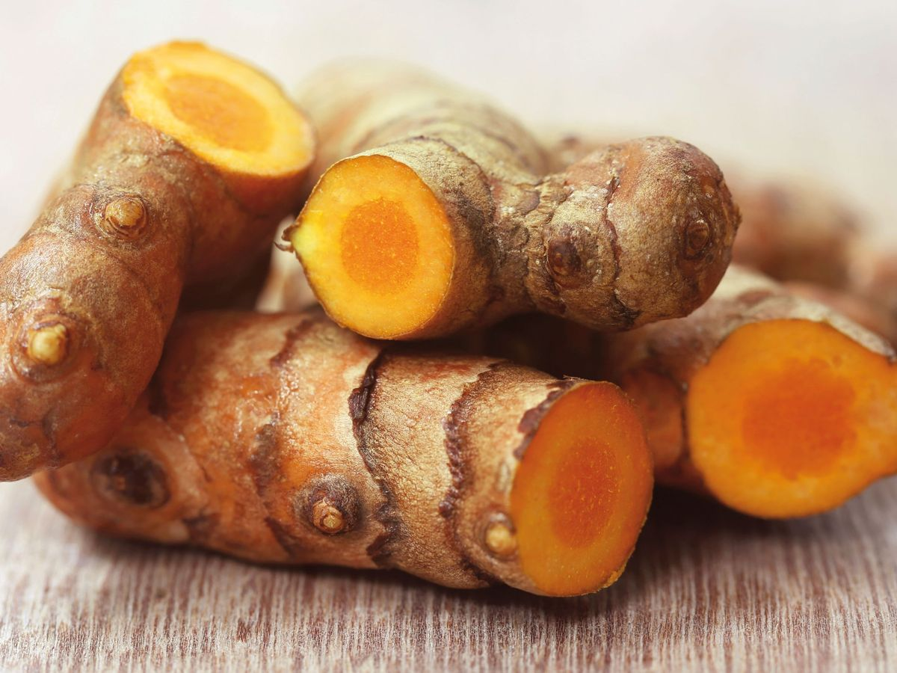

Curcuma longa
الكركم · خرقوم
Épice jaune très présente dans la cuisine marocaine, également vendue comme complément alimentaire.
تابل أصفر حاضر بقوة في المطبخ المغربي، ويُباع أيضاً كمكمّل غذائي.

Parlez-en à votre médecin, surtout si vous suivez un traitement pour une maladie rhumatismale.
استشر طبيبك، خاصة إذا كنت تتابع علاجاً لمرض روماتيزمي.
Vidéo bientôt disponible
الفيديو متوفر قريباً
Le curcuma est une épice jaune extraite du rhizome (la racine) d'une plante de la famille du gingembre, Curcuma longa. Au Maroc, on l'appelle kherqoum et on l'utilise surtout en cuisine.
الكركم تابل أصفر يُستخرج من جذمور (جذر) نبتة من فصيلة الزنجبيل تُسمّى Curcuma longa. يُعرف في المغرب باسم الخرقوم ويُستعمل أساساً في الطبخ.
Son principal composant est la curcumine, à laquelle on attribue des effets anti-inflammatoires (1).
مكوّنه الرئيسي هو الكركمين، الذي تُنسب إليه تأثيرات مضادة للالتهاب (1).
Le curcuma est aussi vendu en gélules ou en comprimés, bien plus concentrés que l'épice utilisée en cuisine.
يُباع الكركم أيضاً على شكل كبسولات أو أقراص، أكثر تركيزاً بكثير من التابل المستعمل في الطبخ.
L'organisme absorbe très mal la curcumine. Certains produits l'associent donc à d'autres substances, comme le poivre noir (pipérine), pour améliorer son absorption ; l'intérêt de ces associations n'est pas démontré (2).
الجسم يمتصّ الكركمين بشكل ضعيف جداً، لذلك تُضاف إليه في بعض المنتجات مواد أخرى مثل الفلفل الأسود (البيبيرين) لتحسين امتصاصه؛ وفائدة هذه الإضافات غير مُثبتة (2).
Le curcuma a été étudié dans plusieurs maladies rhumatismales. Les études sont souvent petites et de qualité limitée.
دُرس الكركم في عدة أمراض روماتيزمية، لكن الدراسات غالباً صغيرة ومحدودة الجودة.
Plusieurs études suggèrent une diminution de la douleur du genou, comparable dans un essai à celle d'un anti-inflammatoire (le diclofénac). La qualité de ces preuves reste faible à modérée (3, 4).
تشير عدة دراسات إلى انخفاض في ألم الركبة، يقارب في إحدى التجارب مفعول مضاد التهاب (الديكلوفيناك). لكن جودة هذه الأدلة تبقى ضعيفة إلى متوسطة (3, 4).
Ces résultats ne permettent pas de recommander le curcuma comme traitement. Il ne remplace en aucun cas votre traitement de fond.
لا تسمح هذه النتائج بالتوصية بالكركم كعلاج، ولا يعوّض بأي حال علاجك الأساسي.
Des atteintes du foie ont été rapportées chez des personnes prenant des compléments de curcuma, apparues après 1 à 4 mois de prise (9, 10).
سُجّلت حالات إصابة بالكبد لدى أشخاص يتناولون مكمّلات الكركم، ظهرت بعد شهر إلى أربعة أشهر من الاستعمال (9, 10).
Ne prenez pas de complément de curcuma sans avis médical si :
لا تتناول مكمّل الكركم دون رأي طبي إذا:
Une initiative de la Société Marocaine de Rhumatologie et de sa Section de Médecine Complémentaire
مبادرة من الجمعية المغربية لطب الروماتيزم وقسم الطب التكميلي التابع لها